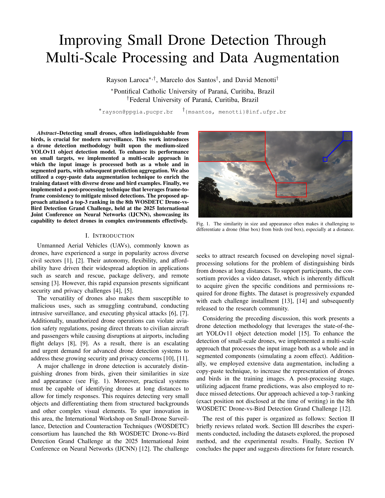

Multi-Scale Processing and Data Augmentation
|
|
|
|
1 Pontifical Catholic University of Paraná, Curitiba, Brazil
2 Federal University of Paraná, Curitiba, Brazil
IJCNN 2025
|
|
Overview of the proposed approach. First, the YOLO11m model is applied to both the full input frame and its segmented regions (simulating a zoom effect). Detections across the original frame and segments are then aggregated, with redundant bounding boxes removed via NMS. Lastly, temporal consistency and robustness to missing detections are achieved by tracking drones across a temporal window and applying linear interpolation. |
Paper
|  | Rayson Laroca, Marcelo dos Santos, David Menotti Improving Small Drone Detection Through Multi-Scale Processing and Data Augmentation International Joint Conference on Neural Networks (IJCNN), pp. 1-8, June 2025. |
|
Abstract. Detecting small drones, often indistinguishable from birds, is crucial for modern surveillance. This work introduces a drone detection methodology built upon the medium-sized YOLOv11 object detection model. To enhance its performance on small targets, we implemented a multi-scale approach in which the input image is processed both as a whole and in segmented parts, with subsequent prediction aggregation. We also utilized a copy-paste data augmentation technique to enrich the training dataset with diverse drone and bird examples. Finally, we implemented a post-processing technique that leverages frame-to-frame consistency to mitigate missed detections. The proposed approach attained a top-3 ranking in the 8th WOSDETC Drone-vs-Bird Detection Grand Challenge, held at the 2025 International Joint Conference on Neural Networks (IJCNN), showcasing its capability to detect drones in complex environments effectively. |
|
|
|
|
Related Work
We developed our drone detection method by combining key analytical insights from prior research. Some relevant references include:
[1] – A. Coluccia, A. Fascista, L. Sommer, A. Schumann, A. Dimou, and D. Zarpalas, “The drone-vs-bird detection grand challenge at ICASSP 2023: A review of methods and results,” IEEE Open Journal of Signal Processing, vol. 5, pp. 766-779, 2024;
[2] – A. Munir, A. J. Siddiqui, and S. Anwar, “Investigation of UAV detection in images with complex backgrounds and rainy artifacts,” in IEEE/CVF Winter Conference on Applications of Computer Vision Workshops (WACVW), 2024, pp. 232-241;
[3] – A. Coluccia, A. Fascista, A. Schumann, L. Sommer, A. Dimou, D. Zarpalas, F. C. Akyon, O. Eryuksel, K. A. Ozfuttu, S. O. Altinuc, F. Dadboud, V. Patel, V. Mehta, M. Bolic, and I. Mantegh, “Drone-vs-bird detection challenge at IEEE AVSS2021,” in IEEE International Conference on Advanced Video and Signal Based Surveillance (AVSS), 2021, pp. 1-8;
[4] – J. Zhao, J. Zhang, D. Li, and D. Wang, “Vision-based anti-UAV detection and tracking,” IEEE Transactions on Intelligent Transportation Systems, vol. 23, no. 12, pp. 25323-25334, 2022.
Acknowledgments
This study was supported in part by the Coordenação de Aperfeiçoamento de Pessoal de Nível Superior (CAPES) – Finance Code 001, and by the Conselho Nacional de Desenvolvimento Científico e Tecnológico (CNPq) under grants # 315409/2023-1 and # 312565/2023-2. We gratefully acknowledge the Pontifícia Universidade Católica do Paraná and Fundação Araucária for their financial support enabling conference participation. We also thank NVIDIA Corporation for donating the Quadro RTX 8000 GPU used in this research.